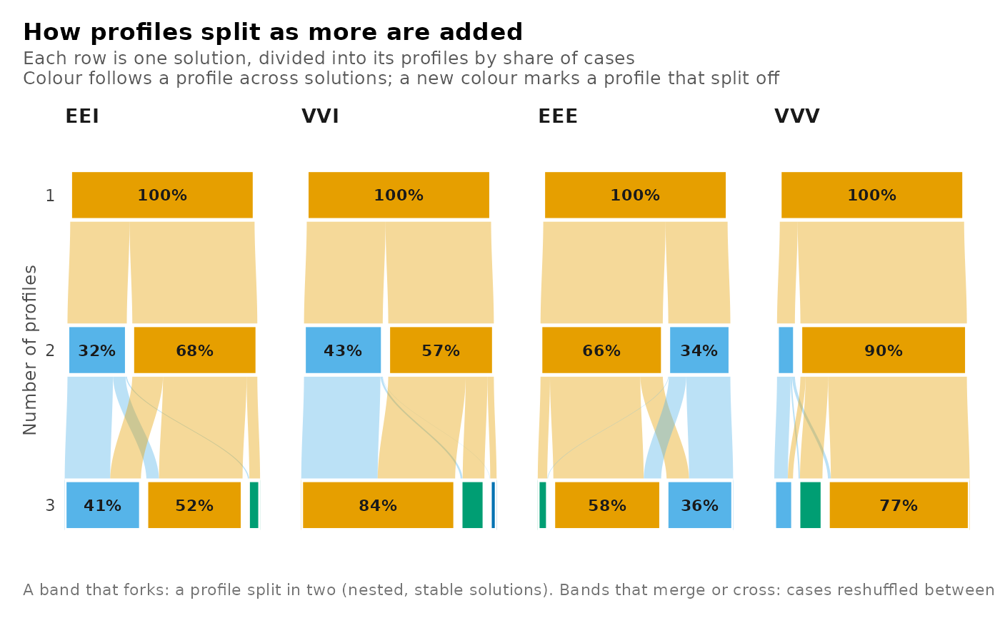

what = "enumeration" draws information criteria against the number of
profiles, one panel per criterion and one line per covariance model and
number of group classes. A candidate that failed to converge is marked with
a cross on its panel's floor, so a gap in a line reads as a failure and not
as a missing candidate. what = "tree" draws how profiles split as more are
added: each row is one solution divided into its profiles by posterior
share, and bands carry the posterior mass shared by a profile and one in the
next solution, coloured by lineage. A band that forks is a profile split in
two; bands that merge or cross are cases reshuffled.
Arguments
- x
A
multilpa_enumerationresult fromenumerate_classes(),enumerate_lpa()orenumerate_lca().- what
"enumeration"(the default) or"tree".- criterion
For
"enumeration", one or more criterion columns ofas.data.frame(x), such as"bic_individual"or"sabic_groups". The default draws AIC, BIC under both sample-size conventions and ICL counted over individuals; a criterion identical at both levels, as in a single-level grid, is drawn once.- combine
TRUEdraws several criteria as panels of one plot;FALSEreturns one plot per criterion.- labels
TRUElabels each series at its right end.- mark_minimum
TRUErings each criterion's lowest value among converged candidates. This marks an extremum; it does not select a model.- main, subtitle
Title and subtitle.
NULLuses the view's own.- ...
Nothing further is accepted; an unknown argument raises an error of class
latents_bad_argument.
Value
A ggplot object, or with combine = FALSE and several criteria a
latents_plots list of them, one per criterion.
Errors
latents_unknown_criterion for a criterion that is not a
column of the grid; latents_nothing_to_plot when no converged candidate
has a finite value, or when a tree has fewer than two numbers of profiles
for every model.
References
Zappia, L. and Oshlack, A. (2018). Clustering trees: a visualization for evaluating clusterings at multiple resolutions. GigaScience, 7(7), giy083.
Examples
if (requireNamespace("ggplot2", quietly = TRUE)) {
set.seed(7)
example_data <- data.frame(score_a = rnorm(120), score_b = rnorm(120))
candidates <- enumerate_lpa(example_data, c("score_a", "score_b"),
n_profiles = 1:3, n_starts = 2)
plot(candidates)
plot(candidates, what = "tree")
}
